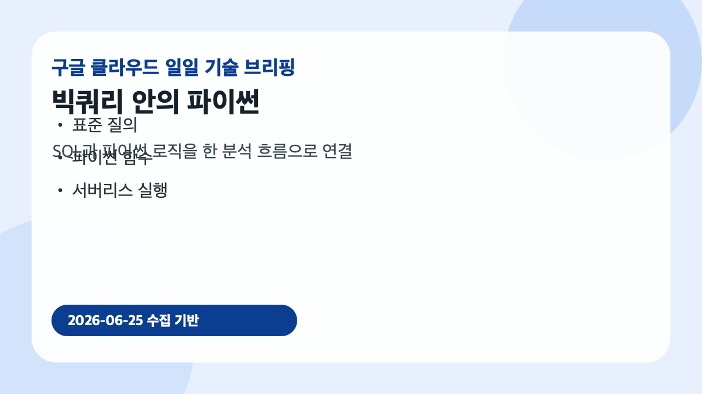

Verifiable trust in the AI era What’s new in Confidential Computing
발행일: 2026-06-23
To help further strengthen verifiable privacy in cloud AI deployments, here’s our latest Confidential Computing innovations.
원문 출처이번 실행에서는 구글 클라우드 공식 블로그 6개 영역을 확인했습니다. 신규로 저장·처리된 핵심 자료는 빅쿼리 관리형 파이썬 사용자 정의 함수의 일반 제공 소식이며, 데이터 플랫폼 의사결정자는 생산성 확대와 실행 통제의 균형을 함께 보셔야 합니다.

발행일: 2026-06-23
To help further strengthen verifiable privacy in cloud AI deployments, here’s our latest Confidential Computing innovations.
원문 출처발행일: 2026-06-23
BigQuery Managed Python UDF가 일반 제공 상태가 되면서, 표준 SQL 질의 안에서 Python 기반 스칼라 함수를 정의·실행하는 경로가 공식화되었습니다.
원문 출처빅쿼리 관리형 파이썬 사용자 정의 함수는 SQL 중심 분석과 파이썬 생태계 사이의 경계를 낮춥니다. 원문은 넘파이, 사이파이, 판다스, 사이킷런 같은 과학·머신러닝 라이브러리를 SQL 선택문 안에서 활용할 수 있다고 설명합니다.
분석가는 데이터 추출 후 별도 실행 환경으로 이동하는 단계를 줄일 수 있습니다. 반대로 플랫폼 팀은 데이터베이스 내부에서 실행되는 파이썬 코드의 권한, 외부 호출, 패키지 공급망을 관리해야 합니다.
반복 전처리, 문자열 정제, 과학 계산, 모델 입력 피처 생성처럼 SQL만으로 복잡했던 작업이 우선 검토 후보입니다. 다만 대량 병렬 처리와 외부 응용프로그램 인터페이스 호출은 비용·지연·장애 전파를 측정해야 합니다.
한국 기업의 데이터 조직은 데이터 웨어하우스 표준화와 현업 분석 민첩성 사이에서 균형을 잡아야 합니다. 이번 소식은 중앙 데이터 플랫폼 안에서 파이썬 기반 전처리와 보강 작업을 더 가까이 가져올 수 있음을 보여주지만, 운영 정책 없이 확산하면 패키지 의존성과 외부 호출 경로가 새로운 감사 항목이 됩니다.
| 관찰된 사실 | 근거 출처 URL | 기업 의사결정 시사점/리스크/기회 |
|---|---|---|
| Engineering Lead, Confidential Computing, Google | 근거 출처 | 확인 필요 |
| Protecting sensitive data used with AI is a critical part of our commitment to providing advanced and secure cloud infrastructure. Confidential Computing cryptographically protects data in use in hardware-based Trusted Execution Environments (TEEs) with verifiable data integrity. | 근거 출처 | 확인 필요 |
| We are thrilled to share our latest Confidential Computing innovations across our hardware ecosystem that help further strengthen verifiable privacy in cloud AI deployments. | 근거 출처 | 확인 필요 |
구글 클라우드 블로그의 공개 목록 페이지는 일부 항목을 동적으로 포함하므로, 본 실행에서는 페이지 파싱으로 확인 가능한 신규 원문만 저장했습니다. 공식 RSS는 XML 피드로 확인되지 않아 목록 페이지 파싱으로 대체했습니다.